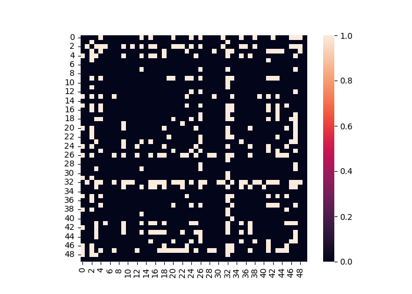
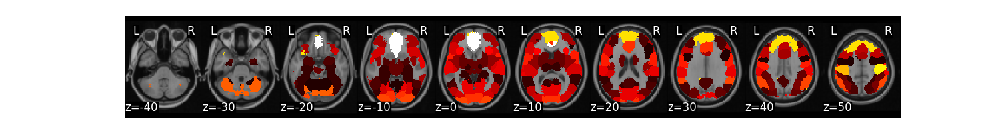

Note
Go to the end to download the full example code
Masking Example¶
This tutorial illustrates methods to help with masking data.
Load Data¶
First, let’s load the pain data for this example.
from nltools.datasets import fetch_pain
data = fetch_pain()
/usr/share/miniconda3/envs/test/lib/python3.8/site-packages/nilearn/maskers/nifti_masker.py:108: UserWarning: imgs are being resampled to the mask_img resolution. This process is memory intensive. You might want to provide a target_affine that is equal to the affine of the imgs or resample the mask beforehand to save memory and computation time.
warnings.warn(
Apply_Mask¶
Spherical masks can be created using the create_sphere function. It requires specifying a center voxel and the radius of the sphere.
from nltools.mask import create_sphere
mask = create_sphere([0, 0, 0], radius=30)
masked_data = data.apply_mask(mask)
masked_data.mean().plot()
/usr/share/miniconda3/envs/test/lib/python3.8/site-packages/nilearn/maskers/nifti_masker.py:108: UserWarning: imgs are being resampled to the mask_img resolution. This process is memory intensive. You might want to provide a target_affine that is equal to the affine of the imgs or resample the mask beforehand to save memory and computation time.
warnings.warn(
/usr/share/miniconda3/envs/test/lib/python3.8/site-packages/nilearn/image/resampling.py:291: UserWarning: Resampling binary images with continuous or linear interpolation. This might lead to unexpected results. You might consider using nearest interpolation instead.
warnings.warn(
Extract Mean Within ROI¶
We can easily calculate the mean within an ROI for each image within a Brain_Data() instance using the extract_roi() method.
import matplotlib.pyplot as plt
mean = data.extract_roi(mask)
plt.plot(mean)
[<matplotlib.lines.Line2D object at 0x7f377b662ca0>]
Expand and Contract ROIs¶
Some masks have many ROIs indicated by a unique ID. It is possible to expand these masks into separate ROIs and also collapse them into a single image again. Here we will demonstrate on a k=50 parcellation hosted on http://neurovault.org.
from nltools.mask import expand_mask, collapse_mask
from nltools.data import Brain_Data
mask = Brain_Data('http://neurovault.org/media/images/2099/Neurosynth%20Parcellation_0.nii.gz')
mask.plot()

We can expand this mask into 50 separate regions
mask_x = expand_mask(mask)
mask_x[:3].plot()
/usr/share/miniconda3/envs/test/lib/python3.8/site-packages/nilearn/masking.py:974: UserWarning: Data array used to create a new image contains 64-bit ints. This is likely due to creating the array with numpy and passing `int` as the `dtype`. Many tools such as FSL and SPM cannot deal with int64 in Nifti images, so for compatibility the data has been converted to int32.
return new_img_like(mask_img, unmasked, affine)
We can collapse these 50 separate regions as unique values in a single image
mask_c = collapse_mask(mask_x)
mask_c.plot()
/usr/share/miniconda3/envs/test/lib/python3.8/site-packages/nilearn/masking.py:974: UserWarning: Data array used to create a new image contains 64-bit ints. This is likely due to creating the array with numpy and passing `int` as the `dtype`. Many tools such as FSL and SPM cannot deal with int64 in Nifti images, so for compatibility the data has been converted to int32.
return new_img_like(mask_img, unmasked, affine)
/usr/share/miniconda3/envs/test/lib/python3.8/site-packages/nilearn/masking.py:974: UserWarning: Data array used to create a new image contains 64-bit ints. This is likely due to creating the array with numpy and passing `int` as the `dtype`. Many tools such as FSL and SPM cannot deal with int64 in Nifti images, so for compatibility the data has been converted to int32.
return new_img_like(mask_img, unmasked, affine)
Threshold and Regions¶
Images can be thresholded using an arbitrary cutoff or a percentile using the threshold method. Here we calculate the mean of the high pain images and threshold using the 95 percentile.
high = data[data.X['PainLevel']==3]
high.mean().threshold(lower='2.5%', upper='97.5%').plot()
We might be interested in creating a binary mask from this threshold.
mask_b = high.mean().threshold(lower='2.5%', upper='97.5%',binarize=True)
mask_b.plot()
We might also want to create separate images from each contiguous ROI.
region = high.mean().threshold(lower='2.5%', upper='97.5%').regions()
region.plot()
Finally, we can perform operations on ROIs from a mask and then convert them back into a Brain_Data instance. In this example, let’s compute a linear contrast of increasing pain for each each participant. Then, let’s compute functional connectivity across participants within each ROI and calculate the degree centrality of each ROI after arbitrarily thresholding the connectivity matrix. We can then convert each ROIs degree back into a Brain_Data instance to help visualize which regions are more central in this analysis.
from sklearn.metrics import pairwise_distances
from nltools.data import Adjacency
from nltools.mask import roi_to_brain
import pandas as pd
import numpy as np
sub_list = data.X['SubjectID'].unique()
# perform matrix multiplication to compute linear contrast for each subject
lin_contrast = []
for sub in sub_list:
lin_contrast.append(data[data.X['SubjectID'] == sub] * np.array([1, -1, 0]))
# concatenate list of Brain_Data instances into a single instance
lin_contrast = Brain_Data(lin_contrast)
# Compute correlation distance between each ROI
dist = Adjacency(pairwise_distances(lin_contrast.extract_roi(mask), metric='correlation'), matrix_type='distance')
# Threshold functional connectivity and convert to Adjacency Matrix. Plot as heatmap
dist.threshold(upper=.4, binarize=True).plot()
# Convert Adjacency matrix to networkX instance
g = dist.threshold(upper=.4, binarize=True).to_graph()
# Compute degree centrality and convert back into Brain_Data instance.
degree_centrality = roi_to_brain(pd.Series(dict(g.degree())), mask_x)
degree_centrality.plot()
- 
- 
/usr/share/miniconda3/envs/test/lib/python3.8/site-packages/nilearn/masking.py:974: UserWarning: Data array used to create a new image contains 64-bit ints. This is likely due to creating the array with numpy and passing `int` as the `dtype`. Many tools such as FSL and SPM cannot deal with int64 in Nifti images, so for compatibility the data has been converted to int32.
return new_img_like(mask_img, unmasked, affine)
Total running time of the script: (1 minutes 41.472 seconds)